Elección principal
Elegi el Ryzen 7 5700G por ofrecer ocho núcleos y dieciséis hilos, lo que permite ejecutar el juego, el software de transmisión y tareas de fondo de manera simultánea sin pérdida de rendimiento. Además, su GPU integrada Radeon Graphics sirve como respaldo en caso de falla de la placa dedicada, y su bajo consumo (65 W) mantiene una temperatura estable incluso durante sesiones prolongadas de transmisión. Como alternativa, tenia el AMD Ryzen 5 8400F (5.0 GHz, 6 núcleos y 12 hilos), que presenta una frecuencia turbo superior y pertenece a la nueva plataforma AM5. Pero lo descarte ya que no posee gráficos integrados, su plataforma AM5 implica un mayor costo de motherboard y memoria (DDR5)
Tabla Comparativa de la IA:
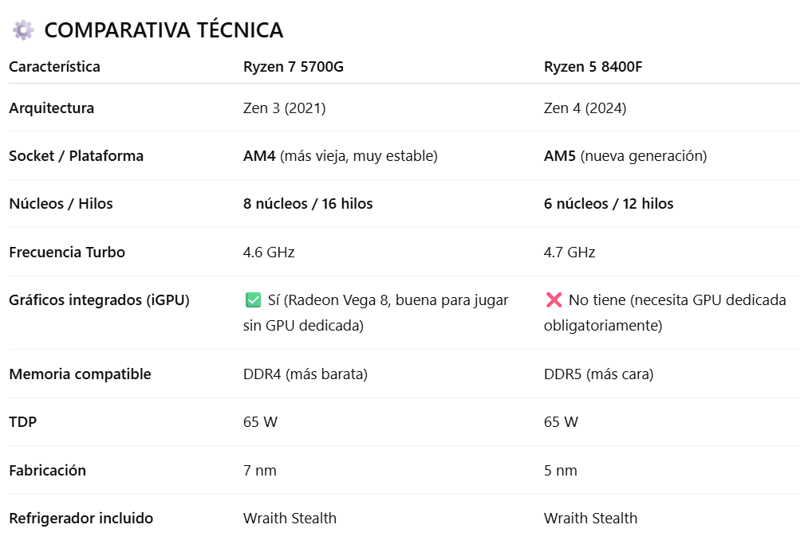En la pagina web de Versus se puede observar que los datos coinciden y se realiza una comparacion igual a la que realizo la IA:
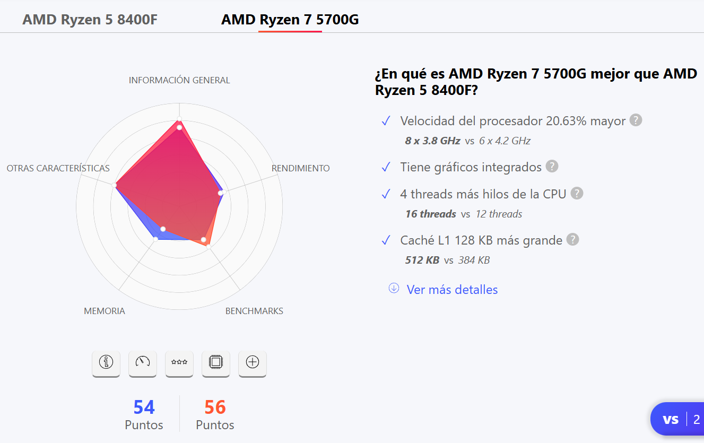 Ver pagina webLa placa madre ASUS PRIME B550M-A AC complementa al procesador con soporte para memoria DDR4 a alta frecuencia (3200 MHz), puertos M.2 NVMe PCIe 4.0 y conectividad Wi-Fi integrada, lo que garantiza una transmisión estable y rápida, especialmente útil para streamers que dependen de una buena conexión inalámbrica. Fue comparada con la MSI B550M PRO-VDH WiFi, la cual ofrece un rendimiento similar pero con un costo ligeramente mas elevado.
Tabla Comparativa de la IA:
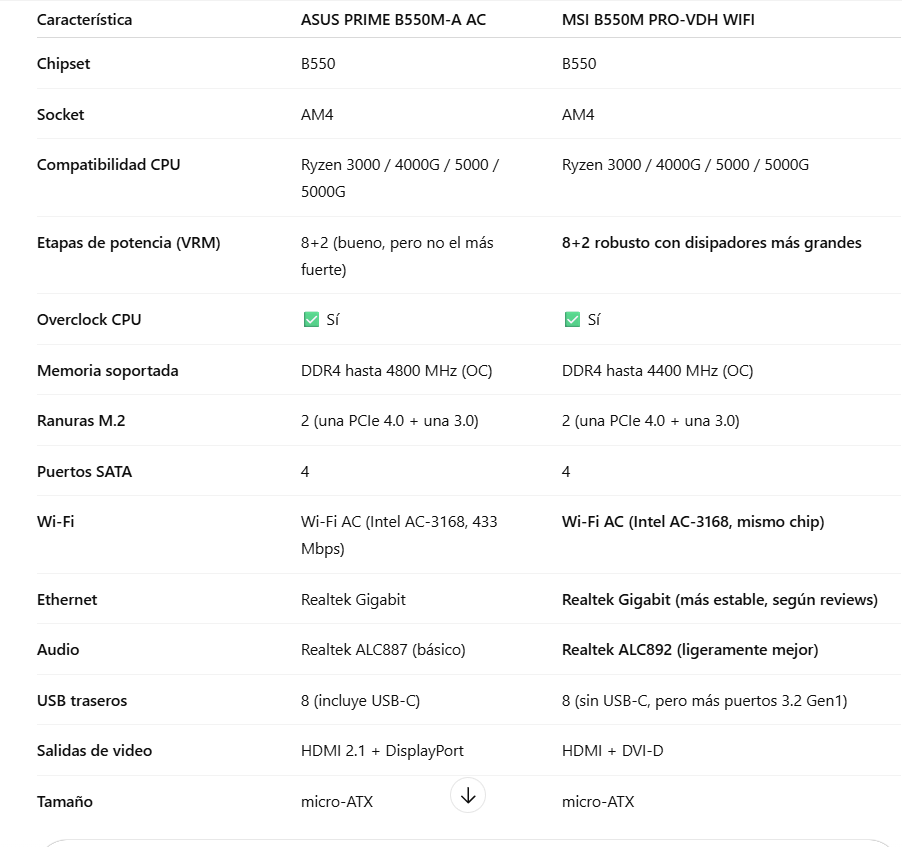En la pagina web de Versus se puede observar que los datos coinciden y se realiza una comparacion igual a la que realizo la IA:
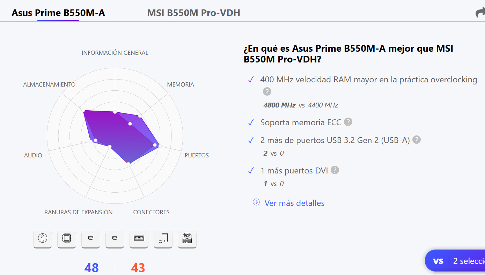 Ver pagina webLa memoria RAM de 16 GB DDR4 (2×8 GB en Dual Channel) es ideal para el tipo de contenido que se busca producir: Minecraft, junto con OBS Studio, Chrome y extensiones como chat y overlays, consume entre 8 y 12 GB, por lo que disponer de 16 GB asegura fluidez sin interrupciones. La elección de memorias Hiksemi Armor 3200 MHz se basó en su compatibilidad con Ryzen, buen rendimiento y bajo costo frente a opciones más caras como la Corsair Vengeance RGB Pro SL, que fue descartada por su precio significativamente mayor sin mejorar el rendimiento real.
Tabla Comparativa IA:
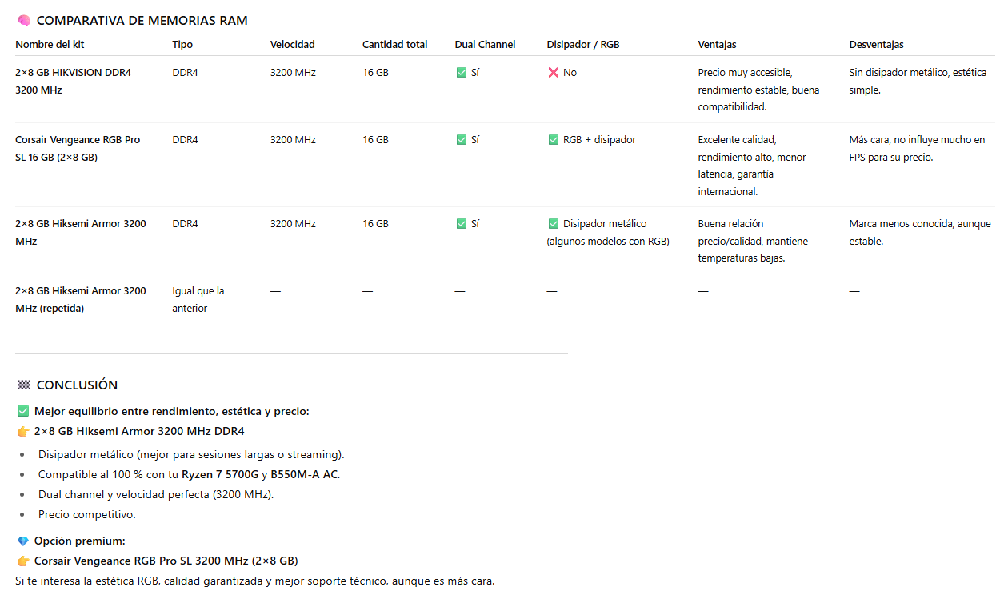En distintas paginas web encontre las caracteristicas que coinciden con lo que me dijo la IA, la Corsair Vengeance RGB Pro SL tiene 44 mm para una mayor compatibilidad con disipadores de CPU voluminosos, iluminación RGB, y garantiza una alta calidad de señal y estabilidad. Esto permite un potencial de overclocking superior. Si bien es una mejor opcion, su costo es mas elevado que la Hiksemi Armor 3200 MHz.
Caracteristicas de la Hiksemi Armor 3200 MHz y la Corsair Vengeance RGB Pro SL:
El almacenamiento NVMe de 1 TB se eligió por su alta velocidad de lectura (hasta 6000 MB/s), permitiendo que tanto el sistema operativo como el software de grabación y los mundos del juego carguen de manera instantánea, reduciendo los tiempos de espera y mejorando la experiencia del usuario. Frente al Patriot P400 Lite Gen4, el Kingston ofrece mayor soporte técnico y garantía en Argentina, además de un mejor desempeño sostenido.
Tabla Comparativa IA:
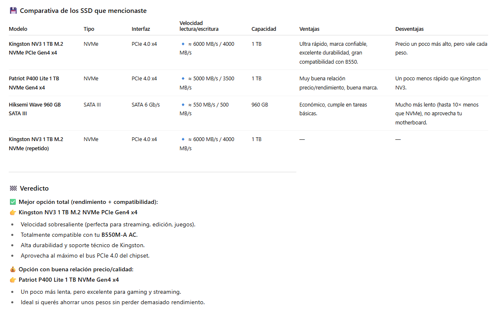En la pagina web de Versus se puede observar que los datos coinciden y se realiza una comparacion similar a la que realizo la IA:
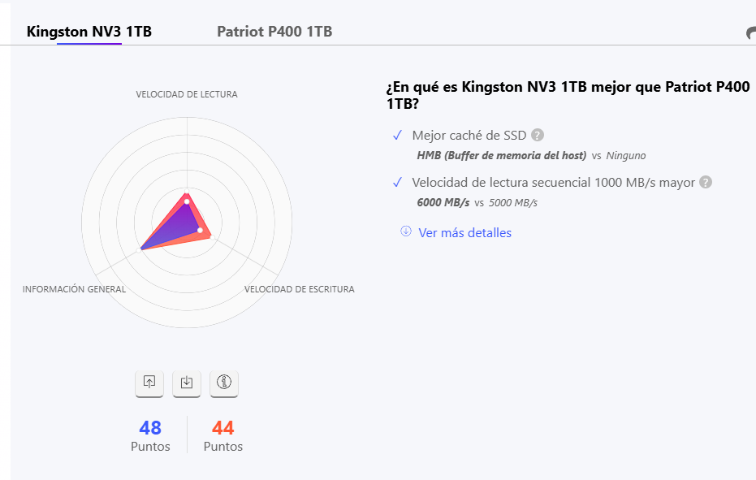 Ver pagina webLa placa de video Galax RTX 3050 EX (6 GB) es clave en la configuración, ya que incorpora el codificador NVENC de NVIDIA, un chip dedicado que se encarga de procesar el video en tiempo real sin sobrecargar el procesador principal. Esto permite transmitir en 1080p a 60 FPS sin afectar el rendimiento del juego, además de soportar tecnologías como DLSS, que mejoran la tasa de cuadros por segundo. Ademas de que es una de las mas economicas en el mercado. Frente a la Asus RTX 3050 Dual OC, la versión de GALAX ofrece un sistema de refrigeración más silencioso y un precio inferior, sin perder rendimiento.
Tabla Comparativa IA:
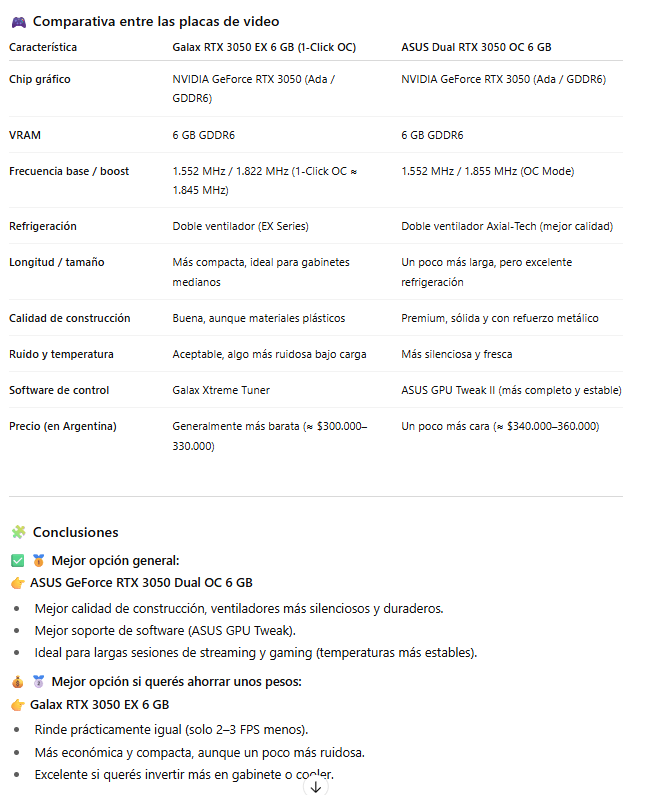En la pagina web de Versus se puede observar que los datos coinciden y se realiza una comparacion similar a la que realizo la IA:
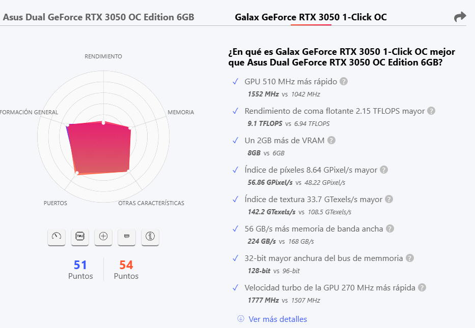 Ver pagina webLa Thermaltake Smart BX1 RGB 650W 80 Plus Bronze se eligió por su certificación 80 Plus Bronze, que asegura eficiencia energética y estabilidad, fundamental para proteger los componentes durante sesiones de juego y transmisión. Proporciona potencia suficiente para el Ryzen 7 + RTX 3050, con margen adicional para futuras actualizaciones. Fue comparada con la Cooler Master MWE 650W Bronze, que tiene especificaciones similares pero sin iluminación RGB y menor calidad de cables.
Tabla Comparativa IA:
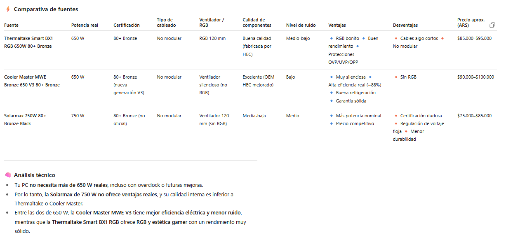Paginas en las que los datos de las fuentes coinciden con los datos de la IA:
Pagina Cooler Master MWE 650W BronzePagina Thermaltake Smart BX1 RGB 650W
El Gabinete GAMDIAS AURA GC1 Elite WH ARGB fue elegido por su amplia ventilación, panel lateral de vidrio templado y cuatro ventiladores ARGB preinstalados, lo que mejora la refrigeración interna sin costos adicionales. Fue comparado con el Xigmatek Aqua M Nano II, que si bien es atractivo, tiene menos espacio interno y peor gestión de cables.
Tabla Comparativa IA:
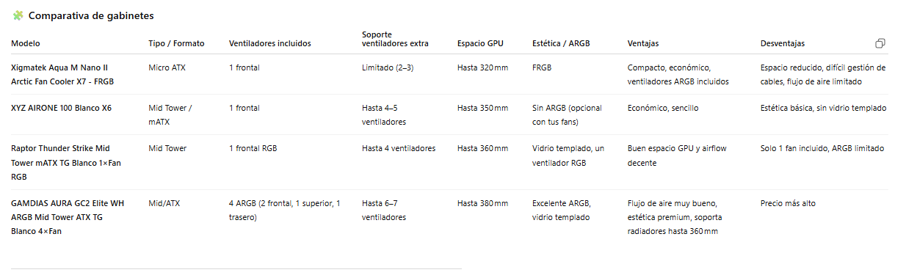 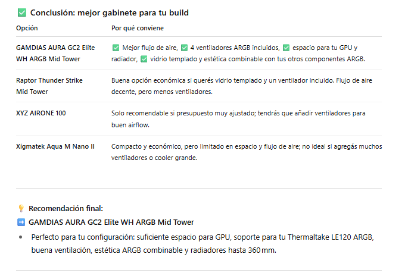El Monitor Gamer Curvo LED Solarmax 24" SX24C7 100Hz FHD HDMI - Black lo elegi porque es uno de los mas economicos, que tiene un buen precio en relacion a su calidad, lo compare con el Valkyrie 24" 200Hz 1ms, si bien este es mucho mejor tambien es mas caro.
Tabla Comparativa IA:
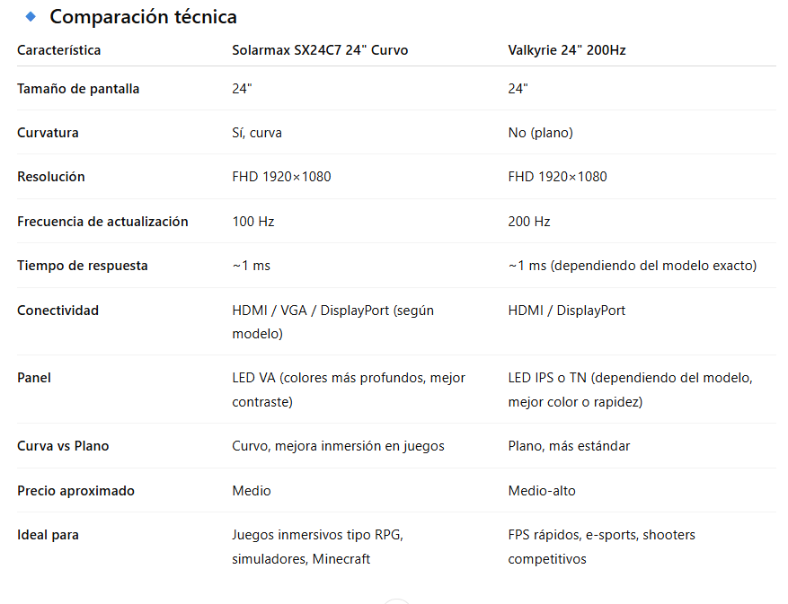El sistema operativo elegido es Windows 11, por su compatibilidad con los controladores de hardware modernos y su optimización para procesadores multinúcleo como el AMD Ryzen 7 5700G. Windows 11 permite ejecutar de manera fluida tanto los juegos como las aplicaciones necesarias para la transmisión, brindando un entorno estable y seguro. Ademas de que tiene la version gratiuta.